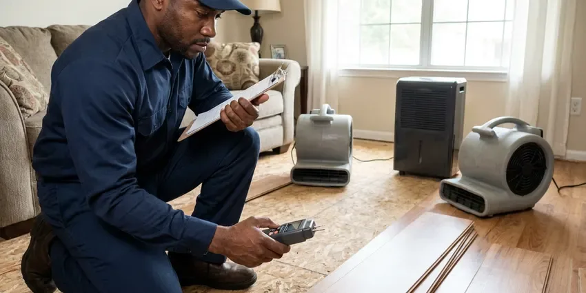

Clogged Drain Repair in Bella Vista, AR
Clogged drains in Bella Vista, AR cleared by licensed plumbers using cables and jetters. No caustic chemicals.
- Upfront Quotes
- Camera Checks on Recurring Clogs
- No Caustic Chemicals
- Cables and Jetters Sized to the Pipe

Sink, Tub or Floor Drain Stopped in Bella Vista, AR?
We clear it mechanically, then run water through it and explain what we pulled out.
Clogged Drains in Bella Vista, AR, Cleared and Explained
Most drain clogs are a slow build of grease, hair, soap and scale. Then one day it stops. DGR Plumbing clears the whole run, not the first few feet, then we flush it with enough water to prove the line is open, so you are not calling again next week.
Our expertise includes:
- Camera inspection on repeat clogs
- Drum augers and sectional cables sized to the pipe
- Descaling ABS and cast iron drain lines

Additional Plumbing Maintenance Services in Bella Vista, AR
Our maintenance and specialty plumbing services in Bella Vista, AR catch small problems before they become emergencies.


Customers
Why Choose DGR Plumbing for Clogged Drain Repair in Bella Vista, AR?
A drain that clogs again a week later costs you twice. We aim for once. That means running the cable the full length of the line, flushing with plenty of hot water and watching the drain carry it without backing up.
- Full-Length Clearing, We clear the whole line, all the way to the main.
- Water Tested, Every drain gets a running-water test before we pack up.
- No Chemicals, Clogs get cleared mechanically, with no caustic products poured in.
Citywide Coverage
Kitchen, bath, laundry, garage, basement, we clear drains in every room. Commercial too. Our service area includes Bella Vista and nearby communities, with the same licensed techs and the same guarantee on every call.
Experienced Team
Our technicians clear hundreds of drains a year. The cable tells them a lot. An experienced tech can tell grease from hair from roots by how the cable bites, so they switch tools early when a cable is not the answer.
Safety-First Approach
Cleanouts on older lines can be rusted shut. Forcing them causes cracks. We use the right wrench and penetrating oil, and if a cap breaks we replace it with a new threaded plug before leaving so the line stays sealed.
Trusted Certified Bella Vista Plumbing Services Professionals
At DGR Plumbing, we take pride in licensed, certified plumbing services throughout Bella Vista, AR. Credentials matter in this trade. Our plumbers hold recognized industry credentials, and they follow strict safety and quality rules on every repair, installation and maintenance call we run.
Call Us Now PHCC Plumbing Contractor Recognition
PHCC Plumbing Contractor Recognition Better Business Bureau (BBB) Accreditation
Better Business Bureau (BBB) Accreditation Angi Certified Pro
Angi Certified Pro ISO 9001 Quality Management Certification
ISO 9001 Quality Management CertificationDrain Clearing for Every Room in Bella Vista, AR
Bathroom Sink and Vanity Drain Clogs in Bella Vista, AR
Vanity drains clog at the pop-up stopper first. Hair wraps around the rod. We pull and clean the stopper, clean the trap, cable the drain arm and swap out worn parts while we are there. Scale buildup is common there.

Kitchen Sink Drain Clogs in Bella Vista
Cooking grease, coffee grounds and starchy food stick to the walls of a kitchen drain and harden. The pipe shrinks over time. We remove the trap, run a cable through the trap arm and branch line and clear the buildup back to the main stack, then follow with a small jetter on heavy grease. Scrape grease into the trash.
Floor Drain and Garage Drain Clearing in Bella Vista
Floor drains in garages, utility rooms and basements collect sand, dirt and debris. Their traps also dry out. We clear the drain and the line behind it, refill the trap and install a trap seal if it rarely gets water. Bad smell, dry trap.
Emergency Clogged Drain Service in Bella Vista
Backups seem to happen right before guests arrive. It never fails. Our emergency technicians come with full drain equipment, and we check the main first if more than one fixture is affected. Hold off on flushing until we arrive.
Kitchen Sink Clog Repair in Bella Vista
Kitchen sinks clog from grease that cools and hardens on the pipe wall. Then food scraps and soap pile on. We pull the trap, send a cable through the wall line all the way to the stack, and check the disposal for a jam or worn impeller. Some lines get a short jetting to clean the walls.
Preventative Drain Maintenance in Bella Vista
Drains that clog once a year can be cleaned once a year instead. It saves you the emergency. DGR Plumbing sets up maintenance visits that cable or jet your problem lines, typically the kitchen branch and main line, on a schedule that fits how fast they build up. Enzyme treatments between visits can help.
Toilet Clog Repair in Bella Vista
A toilet clog usually sits in the trapway, the S-shaped channel inside the bowl. A plunger does not always reach. We use a closet auger with a rubber sleeve, so the cable clears the trapway and the bowl stays unmarked. Toys and wipes come out this way. If the auger finds nothing, the clog is past the toilet and we check the main.

Tub and Shower Drain Clogs in Bella Vista
Slow tubs are almost always hair and soap scum. Every so often it is a lost bottle cap. We remove the strainer or overflow plate, pull the clog out with a drum auger built for small diameter drains and then check the trap if the drain is still sluggish. We take care not to scratch acrylic, fiberglass or porcelain.
A Drain Technician Near You in Bella Vista, AR
People in Bella Vista call us for the same handful of drains: kitchen, tub, laundry, floor drain. We clear them all week. Each call starts with a few questions about which fixtures are slow, since that tells us where the clog is likely to be.
Nights and weekends, a nearby tech makes the difference. Our phones are answered after hours. With vans spread around Bella Vista, a weekend backup often gets cleared that same day.
DGR Plumbing at a Glance
- Licensed and insured plumbers serving Bella Vista, AR
- 24/7 emergency service with same-day scheduling
- Clear written estimates, no hidden fees
- 4.8-star rated by 871+ Arkansas customers
Bella Vista Map
Bella Vista Information
- Population
- 32,368
- Area codes
- Local
- Service area
- Bella Vista and towns within a 40 mile drive
- Nearby
- Bentonville, Rogers, Springdale, Fayetteville
Newer homes across Arkansas mostly use PEX and PVC, which resist corrosion but still benefit from proper support and freeze protection. Older drain lines in Bella Vista pick up scale and the occasional root, which is why a plunger usually just pushes the clog further down.
Talk to a Plumber
Call DGR Plumbing for honest, reliable plumbing from people who know the trade in Bella Vista, AR.
Our Specialized Plumbing Services in Bella Vista, AR
At DGR Plumbing, you get every kind of plumbing service from one company across Bella Vista, AR. We go from leak detection all the way to full system installations, for homes and commercial buildings, and we do it quickly at a fair price. Explore our core services below:


From Backed Up to Draining in Bella Vista, AR
Here is how DGR Plumbing handles a clogged drain in Bella Vista, AR, from your call to a running drain.
Call Us
Call DGR Plumbing at (501) 251-9708 and tell us which drain is stopped. We will ask what you have tried.
Find the Clog
The tech checks which fixtures are slow and finds where the blockage sits. You get a price before any work.
Clear and Test
We clear the line with the right cable or jetter. A flow test confirms it is clear.
Frequently Asked Questions About Clogged Drain Repair in Bella Vista
Most clogs cleared with a cable or auger cost $150 to $500. Main lines cost more. Main sewer blockages that need jetting, or a repair dug from the yard because the pipe itself has failed, can run from $500 to $2,000 or more. We give you the number before starting.
Keep grease out of the kitchen sink. Scrape it into the trash. Use a hair catcher in showers and tubs, flush only toilet paper and run hot water for a minute after using the disposal to carry food down to the main. Scheduled cleaning helps lines that build up fast.
Under two hours for most household clogs. Many are done in 45 minutes. Severe blockages in the main that need a camera and jetting can take a few hours or most of a day if the cleanout is hard to reach or buried. We tell you up front if a job will run long.
Yes, in the main sewer line. Indoor drains are safe from roots. Roots find small cracks or loose joints in older clay and cast iron pipe, grow inside where the water and nutrients are, and form a mat that catches everything flowing past. Established Bella Vista neighborhoods with big trees see it often.
Water that drains slowly or not at all. Gurgling from the pipes. A sour smell from the drain, standing water in the shower and a sink that bubbles when the toilet flushes are all common clues. One slow drain is a local clog.
Almost never. Existing access is enough. Drains get cleared through the fixture, the trap, a cleanout or the roof vent, and a wall only gets opened when a pipe inside it is broken and has to be replaced. We tell you first.
Snaking uses a cable with a cutting or grabbing head. It breaks through the clog. Hydro jetting uses high-pressure water to scrub the pipe wall, so it removes buildup and lasts longer. We use both, depending on the pipe.
RIDGID drain machines and cameras do most of the work. We trust them. Our jetters are sized for residential and light commercial lines, with nozzles for grease, roots and general cleaning that we swap depending on what the camera shows. Every machine is serviced on a schedule.
Hear From Customers Who Hired Our Plumbing Experts

Monica A.
Our water bill nearly doubled in one month with no change in how we used water. The tech checked the meter, heard the leak under the hallway with his equipment, and opened a hole about a foot square. Fixed the same day.
Slab Leak Repair · Fayetteville, AR
Kevin O.
Before buying our house I paid for a sewer camera inspection. DGR Plumbing found a belly in the line that held standing water about forty feet from the cleanout. We used the video to get the sellers to fix it before closing.
Sewer Camera Inspection · Bentonville, ARMarcus H.
Grease from the fryer line kept clogging the kitchen drain at my diner. DGR Plumbing hydro jetted the line after closing, showed me the buildup on camera, and set us up on a quarterly cleaning so it does not catch us on a Friday again.
Drain Cleaning · Conway, AR
Nathan E.
Our tankless heater kept throwing an error code and shutting off mid shower. The tech flushed the heat exchanger, which was full of scale, and replaced a bad flow sensor. Hot water has been steady for half a year now.
Water Heater Repair · Fort Smith, AR
Emily R.
The shutoff valve under our kitchen sink snapped off in my hand on a Sunday morning. DGR Plumbing had someone out by early afternoon. He replaced both angle stops with quarter turn valves and showed me where our main shutoff was, which I honestly did not know.
Plumbing Repair · Conway, AR
Angela D.
Our sump pump quit during a storm and the water was an inch from the basement carpet. DGR Plumbing put in a new pump with a battery backup that same evening. We have had two heavy rains since. It kicked on both times.
Sump Pump · Conway, AR